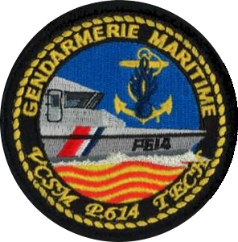
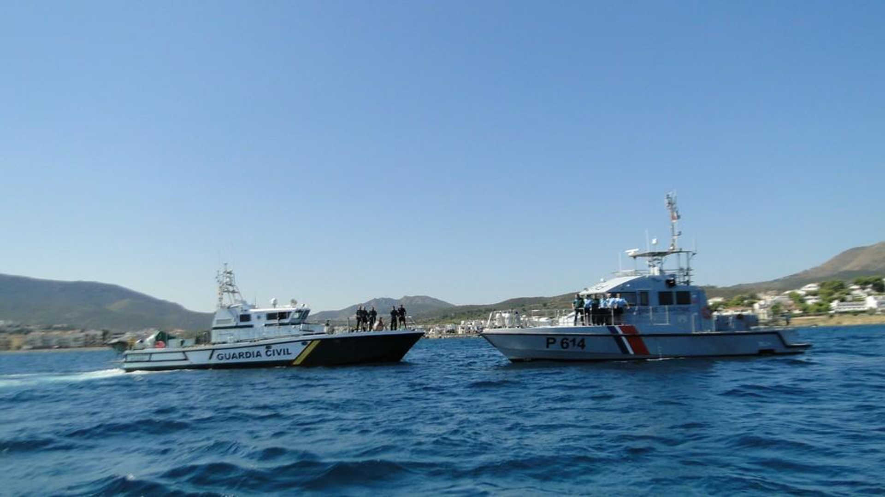

Brigade de gendarmerie maritme de Port vendres

Missions :
L'activité principale de la brigade de gendarmerie maritime se déroule en mer. Elle assure : - La surveillance et sauvegarde des approches maritimes, - La participation aux opérations de secours en mer, - Les investigations en mer lors d'accidents et naufrages, - La surveillance des espaces protégés (réserves marines), - Le contrôle de la navigation de plaisance (matériels de sécurité, documents administratifs, règle de barre...), - Le contrôle de la navigation professionnelle (pêcheurs, barges pour travaux maritimes, plongée pro...), - Le contrôle des activités nautiques (location jet ski, club de plongée, locations de navire...), - Le contrôle à terre des restaurants et vente des produits de la mer (traçabilité et hygiène des produits marins...), - La participation aux exercices avec la Marine Nationale (blanchiment de zones, sécurité de sites sensibles...).
Moyens :
- Mobilité : Véhicules : - 2 Véhicules sérigraphiés. Moyens nautiques : - 1 Embarcation type semi-rigide, - 1 Vedette côtière de surveillance maritime de 20 mètres (VCSM) (P614 TECH).
Effectifs :
- 10 personnels : 8 Sous-officiers, 1 Gendarme adjoint volontaire, 1 Sous-officier détacher de la Marine Nationale. - Police Judiciaire : OPJ : 4 personnels. Certains sous-officiers ont les spécialités/formations suivantes : Mécanicien, Chef de quart, Électricien.